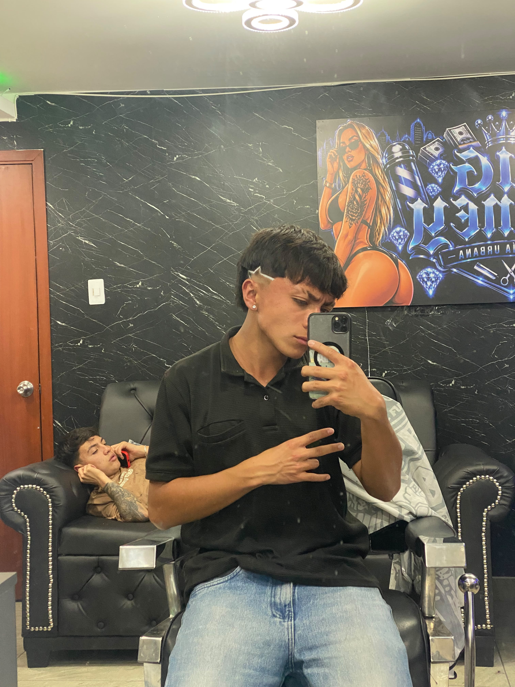

Hola, Soy Mateo Plazas
"Transformando ideas en código limpio y soluciones digitales."
Aprendiz del programa Análisis y Desarrollo de Software (ADSO), enfocado en la creación de interfaces y lógica de programación.
Conoce mi perfilSobre mí

Soy un apasionado de la tecnología cursando el tecnólogo en ADSO. Elegí esta formación porque el desarrollo de software me da las herramientas para resolver problemas reales de la cotidianidad mediante sistemas eficientes.
Me interesa dominar la lógica de programación, el diseño de bases de datos relacionales y la construcción de aplicaciones web escalables.
Mis Habilidades
Bases de Datos
Diseño de modelos relacionales, normalización y consultas multitabla con SQL Server.
Programación C#
Desarrollo de lógica de software y aplicaciones de escritorio utilizando Windows Forms.
Desarrollo Web
Maquetación responsiva con HTML5, CSS3 y estructuras MVC básicas.
Mis Proyectos
Sistema de Gestión para Minimercados
Objetivo: Desarrollar una solución web para el control de inventarios de tiendas locales.
Descripción: Módulo enfocado en el registro de productos, control de stock y control de entradas/salidas.
Tecnologías: C#, ASP.NET Core, SQL Server, HTML, CSS.
Contacto
¿Quieres saber más sobre mis proyectos o conectar profesionalmente?
📧 Correo académico: BMPR34556869@soy.sena.edu.co